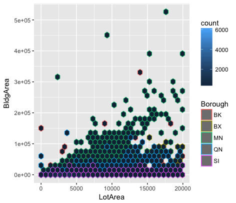
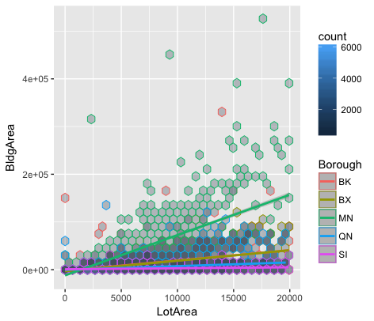

This graph shows the correlation between building area and lot area across 5 boroughs. The data named "PLUTO" is taken from the website of NYC Planning. In the legend, the name of borough is not fully spelled, which is abbreviated as "BK", "BX", "MN", "QN", "SI". For those who are not familiar with NYC boroughs, it is hard for them to recall what it refers to. Each borough is represented by different colored dot. However, many of them are overlapped with each other and it is very hard to read their positions. Moreover, the scale of Y-axis is coded as non-decimal form. "E+n" normally means *10^n. So, if it was 5E+05, it would be 500,000 - that is, 5 * 10^5, or 5 with five zeros after it. People may get confused if they know nothing about it. In this case, additional interpretation is highly recommended for this graph.
Then, I attempt to avoid presenting overlapping dots as shown in the graph above. Now, dots are separated with each other as individual hexagon. A new legend on the top right ambiguously gives the actual count number each hexagon represents by assigning different degree of blue. However, it is meaningless when every hexagon is the same color - black. Another problem is that colors are not easily differentiated to see the trend with respect to the correlation between building area and lot area in five boroughs.
To solve the previous misrepresentation problems, I made the third graph, which displays degree of variation in colors for "count" and five regression lines in this scatterplot. When interpreting the relationship of variables, slope or trend is important because it tells you how much you can expect Building Area to change as Lot Area increases. In conclusion, Building Area and Lot Area in Manhattan is more positively correlated among five boroughs.